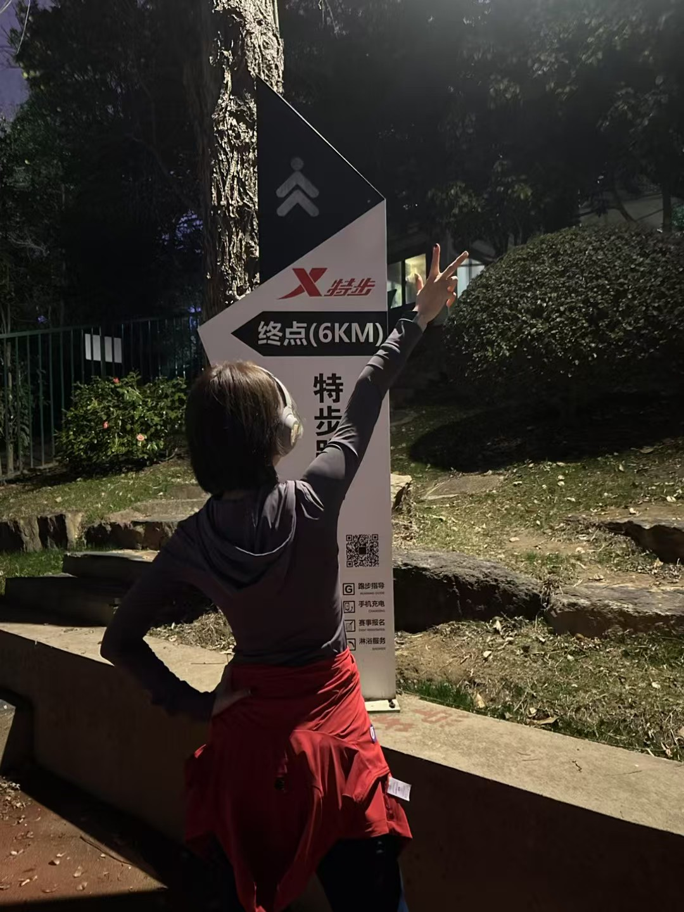
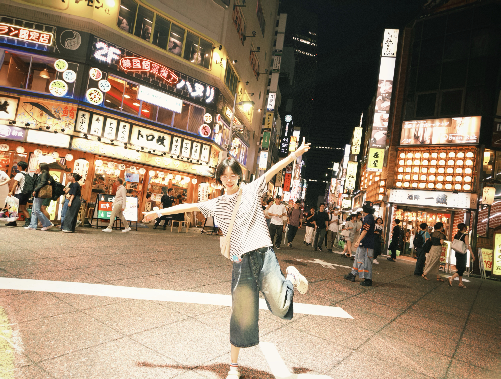
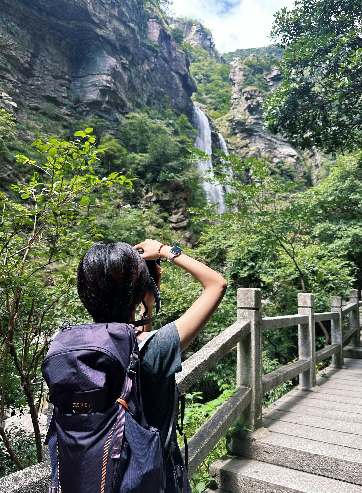
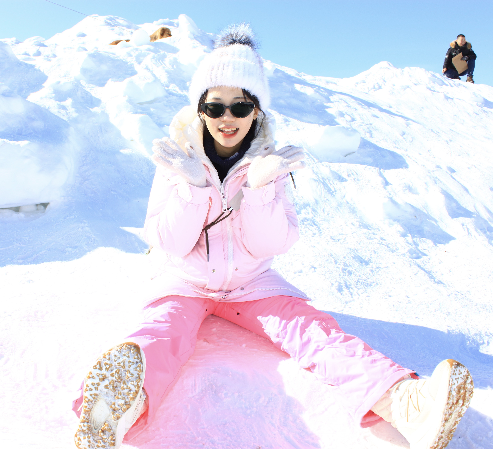
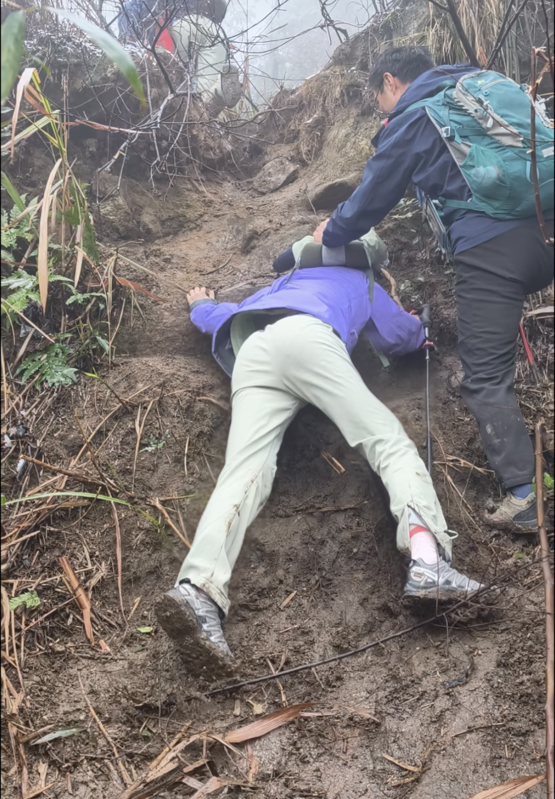
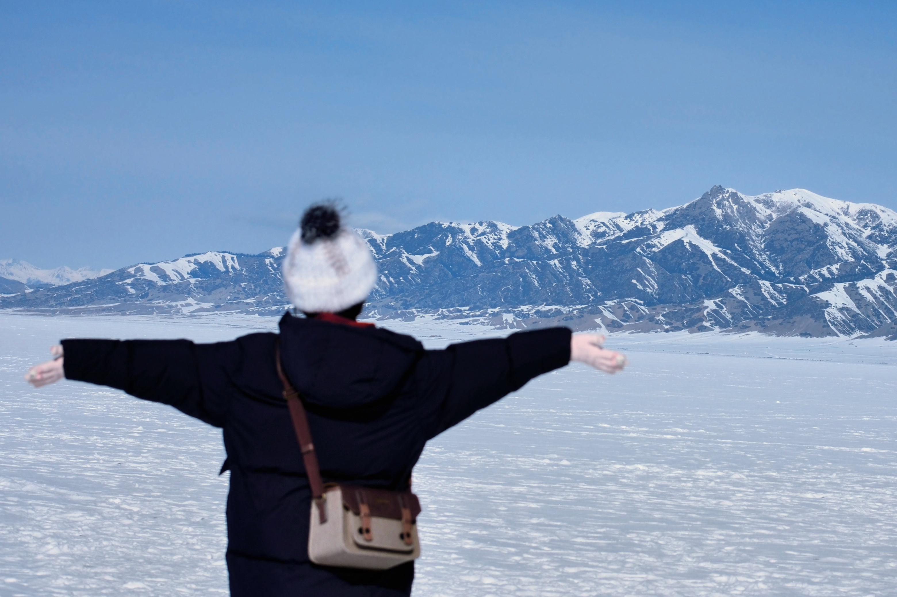
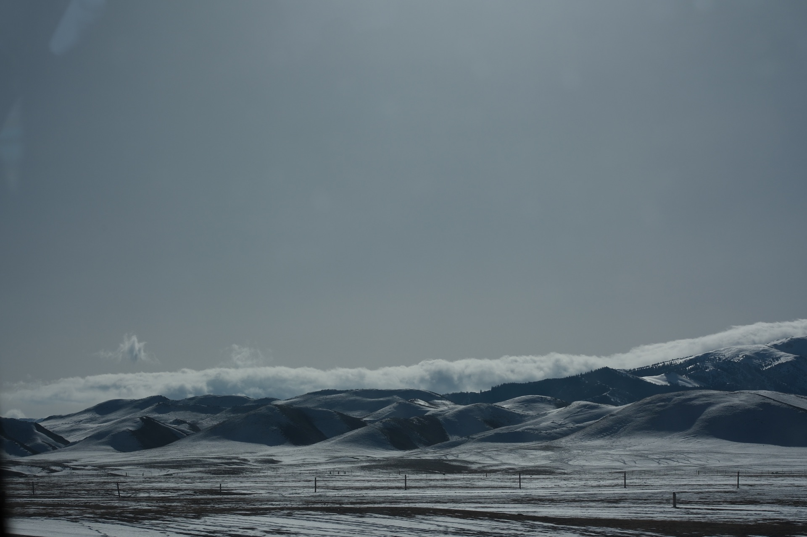

Orange Isle
Finished a run on Orange Isle and kept the feeling of the finish line.
RunningA small archive beyond the lab
I like hiking, running, photography, and traveling. I love embracing life with curiosity and energy—finding joy in every corner of the world and every adventure along the way.

Finished a run on Orange Isle and kept the feeling of the finish line.
Running
Neon streets, warm evenings, and a city made for wandering.
Travel
A summer mountain walk through green valleys and waterfalls.
Photography
Bright snow, cold air, and the joy of being outside.
Hiking
Even the muddy parts become good stories later.
Hiking
A frozen lake, open sky, and mountain light in Xinjiang.
Travel